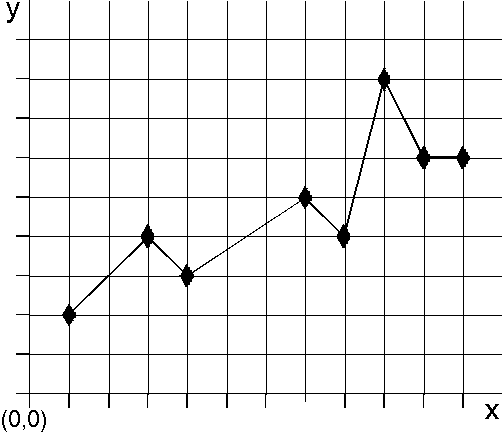

Marker primitives always are drawn centered over a point. In a designated presentation space, GpiMarker draws a single marker primitive of the current marker symbol, with its center at a specified position. This position becomes the new current position when the marker is drawn.
Another marker function, GpiPolyMarker, draws multiple marker primitives in the designated presentation space. Each marker primitive is centered over a position specified in an input array to GpiPolyMarker. All marker primitives drawn by a single call to GpiPolyMarker use the same (current) marker symbol. When a series of marker primitives is drawn, the current position is the center point of the last marker in the series. The following figure shows the use of marker primitives in a line graph.

Marker Primitives
This example shows a sequence of diamond-shaped marker primitives drawn on a line graph at (1,2), (3,4), (4,3), (7,5), (8,4), (9,8), (10,6), and (11,6). The new current position is at (11,6). The marker portion of this example could have been drawn with a single call to GpiPolyMarker or with eight separate GpiMarker calls.